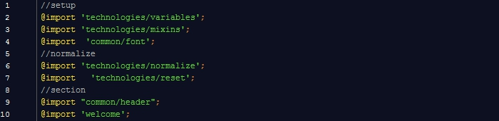
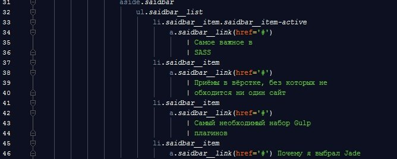
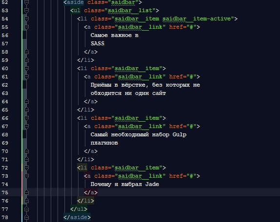

Самое важное в SASS
22 ноября 2016
CSS это хорошо , НО! В верстке как не крути важным фактором является время. Поэтому было принято решение познать препроцессоры.
Просмотрев видео, а так же всевозможные примеры препроцессоров , я понял, что мне больше по душе SCSS, т.к. он ближе по синтаксису к CSS .
Начнем с того, что именно SASS используют многие гиганты IT, как eBay, BBC, Instagram, LinkedIn, Groupon и т.д. Почему? Потому, что scss -это по сути будущее css, переменные (уже поддерживаются браузерами), миксины и вообще все фишки препроцессора в скором (относительно) времени будут доступны в css.
Правильная архитектура Sass имеет решающее значение для создания поддерживаемого, масштабируемого и хорошо организованного проекта. Sass упрощает разделение вашего проекта на логические модули с помощью директивы @import, которая отличается от нативного @import в CSS тем, что подключает файлы .scss и .sass перед генерацией CSS.

Приёмы в вёрстке, без которых не обходится ни один сайт
11 ноября 2017
Вёрстка веб-страниц — это не просто знание приёмов и хитростей создания различных эффектов. Это умение предугадывать результат действий с элементами веб-страниц и понимание особенностей различных браузеров, которые могут по-разному отображать сайт. Деятельность разработчика сайта сродни работе шеф-повара, который точно знает, какие ингредиенты и в каком количестве нужно положить, чтобы улучшить вкус готового блюда.
Тектс.Красиво и элегантно оформленный текст может лучше передать задумку автора и привлечь к себе внимание. К тому же с таким текстом приятнее работать, он лучше воспринимается, и пользователи это ценят
Самый необходимый набор Gulp плагинов
3 декабря 2017
Gulp — это сборщик проектов, который сам по себе ничего кроме организации потоков не умеет. Зато у него есть тьма плагинов, которые умеют все, что надо для front-end. Лично мне надо чтобы мои SCSS собирались в css, а JS минифицировались.
gulp-autoprefixer — один из самых полезных плагинов, который автоматически расставляет префиксы к CSS свойствам.
gulp-browser-sync — вероятно, самый нужный инструмент, с точки зрения повышения продуктивности веб-разработчиков. BrowserSync создает подключение, после чего производит автообновление страницы во всех браузерах на всех устройствах при изменениями не только клиентских или даже серверных файлов. А плюс ко всему синхронизирует позицию скроллинга и заполненные данные в формах.
gulp-imagemin – оптимизация изображений.
gulp-sass компиляция SASS в CSS
gulp-group-css-media-queries ищет одинаковые медиа условия и группирует их
gulp-concat объединение файлов
gulp-uglify сжатие файла
gulp-pug компиляция PUG в HTML
Почему я выбрал Jade(Pug)
20 декабря 2017
Jade — это препроцессор HTML и шаблонизатор, который был написан на JavaScript для Node.js. Проще говоря, Jade — это именно то средство, которое предоставляет вам возможность написания разметки совершенно по новому, с целым рядом преимуществ по сравнению с обычным HTML
К примеру, взгляните на код ниже в формате HTML:

А так эта разметка выглядит в формате Jade:
